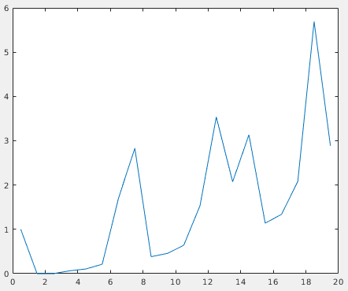

Find particles on every VLP¶
“What do we know and how can we use it?”
We now have
initial estimates for the particle positions and orientations on the surface of every VLP
a good initial model centered on the 6-fold symmetry axis of the lattice structure.
We can use this information to run a one iteration subtomogram averaging project. This should allow us to find a good set of particle positions and orientations, centered on the 6-fold symmetry axes, which we can later use for higher resolution reconstruction.
Particle extraction¶
Unless you already did it after extracting a subset of particles, you will need to extract the whole dataset. Follow the same procedure, but use all the volumes and use as a base name findparticles.
Particle alignment¶
Next we set up a new alignment project using dcp. This time, the aim is to align each oversampled initial particle position to the closest real particle position in the lattice. The important difference compared to the previous step are:
Input data should be the whole dataset, not the subset, and the the relative
.tblfile.Template should now be the aligned, symmetrised initial model that we generated in the last section:
dynamo/inimodel/ite_0008/averages/average_aligned_along_z_c6.em.We only want to run for one iteration. Now that we’re working with the full dataset, calculations take significantly longer. Because our initial model is good one iteration of alignment should allow us to see the lattice structure appear in the particle positions.
We only want to perform local in plane and out of plane angular searches, since we are already fairly sure about our out of plane angles because they come from our
Vesiclemodels. The in plane searches can be limited because of the C6 symmetry of the referenceWe should adjust the shifts so that particles can only move half of the lattice spacing in the x and y direction. We expect to find a lattice of particles with roughly 7.5 nm spacing. If we allow each particle to shift a maximum of 4nm in each direction it should be guaranteed to find the closest true position in the lattice, without moving too far. This maximises the chances of finding all lattice positions from the beginning.
We should allow the particles to shift more in z than in x and y to account for any errors when defining our
Vesiclemodels.
{kind=link}
Once the parameters are all set, run the project from the command line as before. This will take significantly longer that the previous time!
Cleaning the dataset based on geometrical constraints¶
We can now take a look at the resulting particle positions, written in the output file dynamo/findparticles/results/ite_0001/refined_table_ref_001_ite_0001.tbl.
We can use view_particles.m to open a 3D viewer and examine them. Open matlab in dynamo/findparticles/results/ite_0001/ and run:
view_particles('refined_table_ref_001_ite_0001.tbl')
function gui = view_particles(table)
% read the table
table = dread(table)
% get unique keys of each volume
keys = unique(table(:, 20));
% open the viewer gui
gui = mbgraph.montage();
% loop through volume keys
for key_idx = 1:size(keys)
key = keys(key_idx);
% extract the table corresponding to this volume
idx = table(:, 20) == key_idx;
subtable = table(idx, :);
% draw the particles as points and lines
ax = gui.gca;
sketch = dpktbl.plots.sketch(subtable, 'haxis', ax);
% create a new frame for the next volume
if key_idx~=size(keys, 1)
gui.step;
end
end
end
{kind=link}
As you can see, there are regions where particle positions appear to form regular lattices, and other smaller, more irregular regions. These disordered patches are likely due to irregularities in the VLP we annotated. To avoid including particles which do not contain our lattice structure, we should try to remove these particles at this stage.
However, the first cleaning step we should take is removing duplicate particles (remember, we oversampled the surface compared to the expected particle density!). To do so, we will use a simple matlab script, remove_duplicates.m.
To run, simply open MATLAB in dynamo/findparticles/results/ite_0001/averages and run:
remove_duplicates
% read table
table = dread('refined_table_ref_001_ite_0001.tbl');
% remove duplicates
threshold = 4;
nodup = dpktbl.exclusionPerVolume(table, threshold)
% write out table
dwrite(nodup, 'result_10Apx_nodup.tbl');
This will create a new table called result_10Apx_nodup.tbl, reducing clusters of multiple particles within 4 pixels (half the distance we measured earlier) to a single particle.
The next step is to remove particles that don’t belong to the lattice. To do so, we use check_radial_distribution.m.
Once again, in the same directory, simply run:
check_radial_distribution
% check number of neighbours in radial shells, 1 px thick shells
% read table
table = dread('result_10Apx_nodup.tbl');
% check average number of neighbours in shells
% initialise result vector
neighbours_in_shells = zeros(20, 1);
shell_starts = linspace(0, 19, 20);
% check number of neighbours in shell, count and append to result
for shell_start_idx = 1:size(shell_starts, 2)
min_dist = shell_starts(1, shell_start_idx);
max_dist = min_dist + 1;
n_neighbours = dtneighbours_in_range(table, min_dist, max_dist);
neighbours_in_shells(shell_start_idx) = mean(n_neighbours);
end
plot(shell_starts + 0.5, neighbours_in_shells)
% plot shows most particles have more neighbours at 5.5-8.5px distance
This will open a plot of the radial distribution of neighbouring particles for the whole dataset. Here, we can see a high peak at around 7.5 px, and periodic peaks after that.

This confirms the previously measured interparticle distance and the fact that most particles slid into ordered positions in the lattice. We can use the first peak to select against particles that don’t conform to this distribution. The next script, subset_table_based_on_neighbours.m, removes all particles that don’t have at least 3 neighbours in the radial shell at distance 7.5 px. To use it, run:
subset_table_based_on_neighbours
% read table
table = dread('result_10Apx_nodup.tbl');
% calculate neighbours around peak at 7.5px
peak = 7.5;
delta = 1;
neighbours = dtneighbours_in_range(table, peak-delta, peak+delta);
% see which particles have more than 3 neighbours, save as indices to
% access table
idx = neighbours > 3;
subset = table(idx, :);
% write out table
dwrite(subset, 'result_10Apx_nodup_neighbourcleaning.tbl');
compare_two_tables(table, subset);
When finished, the script will open a viewer to inspect the table before and after the processing. Switching to a less clean dataset (for example TS_43) will make it clear that most bad particles were removed.
The final output is a new table called result_10Apx_nodup_neighbourcleaning.tbl which contains only references to the particles that we selected. This is our cleaned dataset, ready for refinement in RELION!